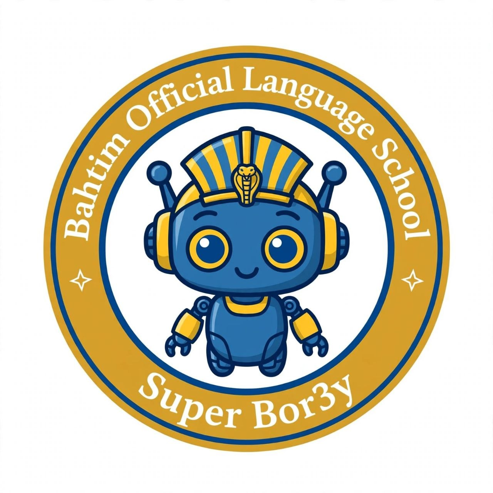

أنا روبوت صنعه اتحاد طلاب مدرسة بهتيم الرسمية للغات، مستشار قانوني ذكي متخصص في القرار الوزاري 62 لسنة 2013 والاتحادات الطلابية.
✦ من بهتيم.. للعالم
✦✧

🤖
حكايتي واللغات
🇪🇬 العربية الفصحى
انا سوبر برعي روبوت تم تصنيعي من اتحاد طلاب مدرسة بهتيم الرسمية للغات عام 2022 /2023 حيث كان شعار الاتحاد «الاتحادات الطلابية والمشروعات القومية في ظل الجمهورية الجديدة». ثم تم تعديلي وتطويري عام2023 / 2024 حيث كان شعار الاتحاد " الاتحادات الطلابية والذكاء الاصطناعي ثم تم تطويري عام 2024 / 2025 وكان شعار الاتحاد" الاتحادات الطلابية وبناء شخصية المتعلم
ثم تم تطويري وإدخال بعض التعديلات مرة أخرى للعام 2025 / 2026 حيث شعار الاتحاد " الاتحادات الطلابية وتشكيل الوعي لعالم متغير"
وهذا العام موجود معكم وشعار الاتحاد " الاتحادات الطلابية وطالب عالمي متجذر".
🇪🇬 اللهجة المصرية
أنا سوبر برعي، روبوت اتعمل من اتحاد طلاب مدرسة بهتيم الرسمية للغات سنة ٢٠٢٢/ ٢٠٢٣، واللي كان شعار الاتحاد وقتها «الاتحادات الطلابية والمشروعات القومية في ظل الجمهورية الجديدة». وبعدين اتعدلت واتطورت سنة ٢٠٢٣/ ٢٠٢٤ وشعار الاتحاد كان «الاتحادات الطلابية والذكاء الاصطناعي». ورجعوا طوروني تاني سنة ٢٠٢٤/ ٢٠٢٥ وكان شعار الاتحاد «الاتحادات الطلابية وبناء شخصية المتعلم». وبعدين اتطورت ودخلت عليّا تعديلات كمان للعام ٢٠٢٥/ ٢٠٢٦ وشعار الاتحاد «الاتحادات الطلابية وتشكيل الوعي لعالم متغير». والسنادي أنا موجود معاكم وشعار الاتحاد «الاتحادات الطلابية وطالب عالمي متجذر».
🇬🇧 English
I'm Super Bor'i, a robot created by the Student Union of Bahteem Official Language School in 2022/2023, when the union's slogan was "Student Unions and National Projects Under the New Republic." Then I was modified and upgraded in 2023/2024, when the slogan was "Student Unions and Artificial Intelligence." After that, they upgraded me again in 2024/2025, when the slogan was "Student Unions and Building the Learner's Character." Then I was upgraded with more modifications for 2025/2026, when the slogan was "Student Unions and Shaping Awareness for a Changing World." And this year I'm here with you with the slogan "Student Unions and a Global Student Rooted in Identity.
🇫🇷 Français
Je suis Super Bor'i, un robot créé par le Conseil des Élèves de l'École Officielle de Langues de Bahteem en 2022/2023, quand le slogan du conseil était « Les conseils d'élèves et les projets nationaux sous la Nouvelle République ». Ensuite, j'ai été modifié et développé en 2023/2024, avec le slogan « Les conseils d'élèves et l'intelligence artificielle ». Puis on m'a encore développé en 2024/2025, avec le slogan « Les conseils d'élèves et la construction de la personnalité de l'apprenant ». Ensuite, j'ai reçu d'autres améliorations pour l'année 2025/2026, avec le slogan « Les conseils d'élèves et la formation de la conscience pour un monde en changement ». Et cette année, je suis là avec vous avec le slogan « Les conseils d'élèves et un élève mondial bien ancré.
🇩🇪 Deutsch
Ich bin Super Bor'i, ein Roboter, der 2022/2023 von der Schülervertretung der Bahteem Official Language School gebaut wurde – damals lautete das Motto „Schülervertretungen und nationale Projekte im Rahmen der Neuen Republik“. Danach wurde ich 2023/2024 angepasst und weiterentwickelt, da hieß das Motto „Schülervertretungen und Künstliche Intelligenz“. Anschließend wurde ich 2024/2025 noch einmal weiterentwickelt, mit dem Motto „Schülervertretungen und Persönlichkeitsbildung der Lernenden“. Danach bekam ich für das Jahr 2025/2026 noch einmal Updates und Anpassungen, unter dem Motto „Schülervertretungen und Bewusstseinsbildung für eine sich verändernde Welt“. Und dieses Jahr bin ich mit euch hier mit dem Motto „Schülervertretungen und verwurzelte Weltbürger-Schülerinnen und -Schüler.
🇨🇳 中文
我是超级博里（Super Bor'i），是由巴赫蒂姆官方语言学校（Bahteem Official Language School）学生会在2022/2023学年制造的机器人，当时学生会的口号是“新时代下的学生会与国家重大项目”。后来在2023/2024学年对我进行了修改和升级，当时的口号是“学生会与人工智能”。接着在2024/2025学年又对我进行了升级，当时的口号是“学生会与塑造学习者人格”。之后在2025/2026学年又进行了新一轮的升级和调整，口号是“学生会与面向多变世界的意识塑造”。而今年我和大家在一起，本届口号是“学生会与扎根本土的国际化学生。
اتحادات الطلاب والقرار 62 لسنة 2013
📋 ما هو القرار 62 لسنة 2013؟
هو القرار الوزاري المنظم للاتحادات الطلابية في المدارس المصرية، ويهدف إلى غرس الروح الديمقراطية وإعداد قيادات شبابية واعية وتفعيل المشاركة الإيجابية في أنشطة المدرسة.
القرار الوزاري رقم 62 لسنة 2013
المكتب التنفيذي للاتحاد (هذا العام)
👥 تشكيل المكتب التنفيذي ورعاة الاتحاد
• الأخصائي المختص بنشاط الاتحاد: أ/ نوال حسانين
• الرائد العام للاتحاد: أ/ أسامة ربيع
• أمين الاتحاد: عنان علي
• الأمين المساعد: مازن محمد
• المقرر العلمي: شهد شحاته
• المقرر الاجتماعي: مصطفى عبدالفتاح
• المقرر الفني: أحمد محمود
• المقرر الرياضي: أحمد سامح
• المقرر الديني والثقافي: رقية رمضان
• عضو فعال: فارس أحمد
• عضو فعال: سلمى حسام
• عضو فعال: مريم أسامة
🎙️ اتكلم مع برعي
اختاري لغة سؤال برعي ولغة رد الطالب، وسيُشغّل الموقع السؤال ثم الرد بالترتيب.
🤖 دردش مع سوبر برعي (المستشار القانوني للقرار 62)
اسألني عن عدد مواد القرار، شروط صحة الاجتماعات، تشكيل مجلس الرواد، شروط الترشح، أو أي بند في القرار 62.
أهلاً بك يا فندم! أنا سوبر برعي، مستشارك القانوني المتخصص في القرار الوزاري 62 لسنة 2013. تفضل بطرح أي سؤال أو اختبار قانوني وسأجيبك بدقة تامة!